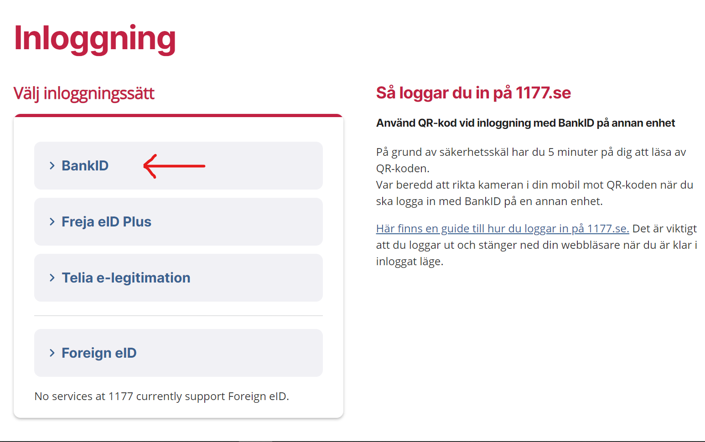

BankID är en app som man laddar ned på mobilen som sedan man använder när man ska logga in på vissa hemsidor, identifiera sig, som man gör med ett ID-kort eller för att bekräfta ett köp du gjort på internet.
Så här ser det t.ex ut när man ska logga in på vårdguiden, där det vanligaste sättet att logga in är med BankID.
Klicka här för att läsa mer om vårdguidenEftersom ditt BankID är kopplat till din bank så måste man kontakta sin bank och be dem om hjälp för att få igång det. När du har ringt banken och de har hjälpt dig att skapa ett konto så behöver man bara ladda ned appen och logga in.